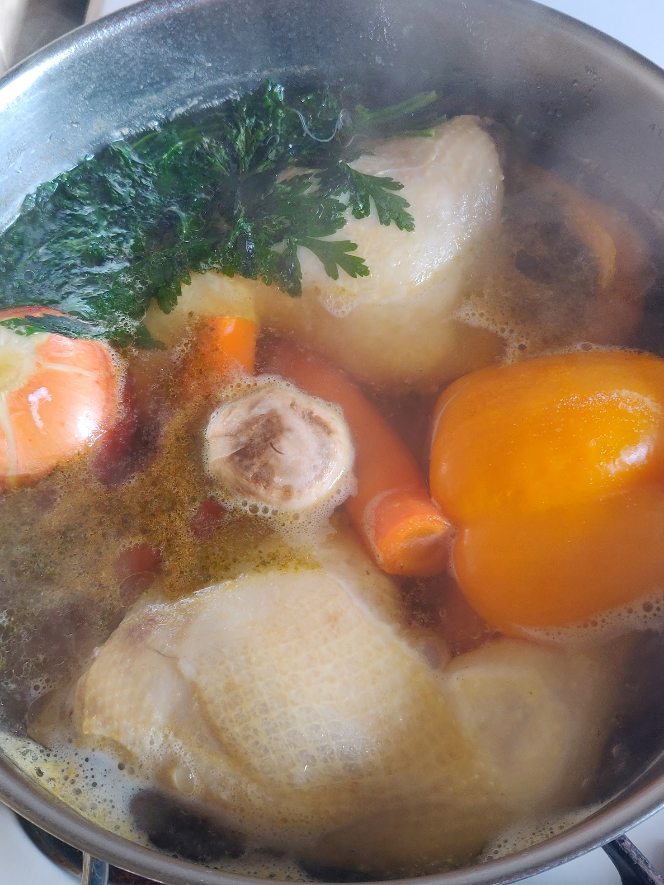

Hozzávalók:
- 3 db egész csirkecomb (vagy farhát, karaj, tarja, marhahús stb.)
- 3 szál sárgarépa
- 2 szál fehérrépa
- 1 fej vöröshagyma (a legalsó héját meghagyni, a gyökerét levágni, megmosni)
- 3-4 gerezd fokhagyma (vagy egy sem)
- néhány szem bors
- 1 maréknyi zöldborsó
- 1 halványító zeller
- karalábé
- kisebb zellergumó
- negyed kelkáposzta
- paprika
- paradicsom
- zöldség zöldje (összekötözni cérnával)
- só
- csigatészta
Elkészítés:
- A húst (beáztatni, megpucolni előtte, ha kell) hideg vízben feltesszük főni. Ahogy melegszik a víz, a húsban lévő fehérje hab formájában elkezd kicsapódni a levesünk tetejére. Ezt a habot folyamatosan eltávolítjuk egy kanál, esetleg szűrő segítségével. Amikor már gyöngyözik a víz, és a lehető legtöbb habot eltávolítottuk, bezöldségeljük a levest.
- Minden zöldséget megpucolunk, és egészben a leveshez adjuk a borssal és a petrezselyemmel együtt, sózzuk. (Közben beletehetünk két leveskockát, ha szükséges.)
- Lassú tűzön legalább 2 órán át főzzük a levest. Ügyeljünk rá, hogy ne forrjon. Amikor minden zöldség megpuhult, és a hús is olyannyira megfőtt, hogy szinte szétesik, lekapcsoljuk a tűzhelyet.
- A tésztához vizet forralunk, kicsit megsózzuk, és a csomagoláson feltüntetett idő alatt kifőzzük azt.
- Egy szűrő segítségével leszűrjük a levest, és a zöldségekkel, a hússal és a tésztával tálaljuk.
http://erika-konyhaja.blogspot.com/2014/04/husleves-csirkecombbol.html
https://streetkitchen.hu/levesek-es-fozelekek/pulykahusleves-pulykacomb/
https://streetkitchen.hu/street-kitchen/hazias_csirkehusleves_egyszeruen/
https://streetkitchen.hu/levesek-es-fozelekek/pulykahusleves-pulykacomb/
https://streetkitchen.hu/street-kitchen/hazias_csirkehusleves_egyszeruen/